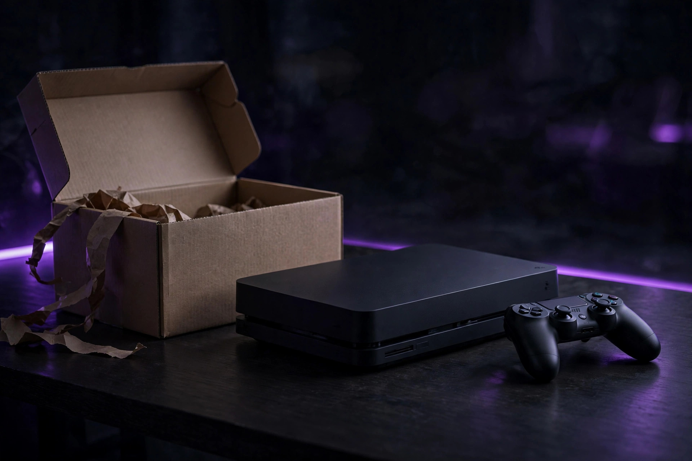
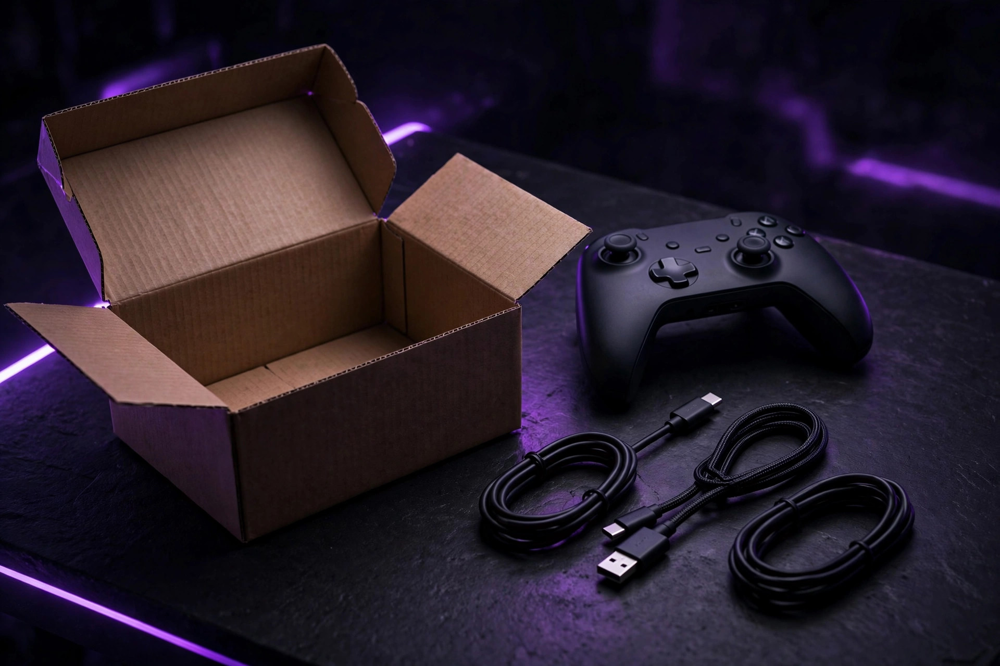

Buying refurbished and open-box gaming gear: the 20% rule

Refurbished gaming gear is one of the best-kept secrets in budget setups — and one of the easiest ways to get burned. The difference comes down to three things: what kind of "used" you're buying, which category of gear it is, and whether the discount is actually worth the risk. This guide gives you the decision procedure, category by category.
Open-box vs refurbished vs renewed: the real difference
These labels aren't synonyms. Open-box items are typically customer returns that were inspected and graded by condition — often basically new, bought and returned within days. Refurbished products were tested, reconditioned, and verified to meet functionality standards — something was fixed or inspected and the unit was repackaged. "Renewed" is usually a marketplace program label for the same idea. One fact that surprises buyers: the warranty on a refurbished item comes from the store's program, not from the original manufacturer — so the refurbisher's reputation matters more than the brand on the box.
The category safety map
| Category | Verdict | Why |
|---|---|---|
| Controllers, headsets, speakers | Safe | Few failure modes; problems show up immediately in testing |
| Monitors | Safe with a screen check | Dead pixels and image retention are the risks — both visible in a 5-minute check |
| Game consoles | Safe from certified sellers | Demand a 12-month warranty and the full accessory set |
| Keyboards, mice | Safe | Wear is cosmetic and testable on the spot |
| VR headsets | Caution | Lenses and straps wear in ways photos hide; hygiene and calibration matter |
| Power supplies, motherboards | Avoid as refurbs | Failure modes are hidden and catastrophic — buy new |
The principle: buy refurbished where the failure modes are visible (screens, buttons, sticks, sound) and avoid it where failures are hidden (power delivery, board-level faults). Simple solid-state peripherals are the sweet spot; anything whose failure fries the rest of your setup is not.

The 20% rule and the real-price calculation
The 20% rule is the decision shortcut: if the price difference between brand-new and certified refurbished is less than 20%, buy new. The full manufacturer warranty and zero risk history are worth the small premium. But the rule only works on the real refurb price, which isn't the listing price. Compute it like this:
- Start with the listing price.
- Add missing accessories. A refurbished console missing its controller, HDMI cable, or power brick can cost real money to complete — price every missing piece before calling it a bargain.
- Add the warranty gap. A refurb with a 90-day warranty versus a new unit with a full year has a hidden cost: your risk. If the gap makes you nervous, the discount isn't big enough.
- Apply the 20% rule to the total. Real refurb price vs. new price: under 20% apart, buy new.
Three rules sit underneath the math: stick to manufacturer-certified or tier-1 refurbishers (a unit repaired by the original maker beats a mystery third party); require a 90-day warranty minimum — a seller offering only a 14-day return window doesn't trust its own inspection process; and never buy "as-is" from peer-to-peer listings unless you genuinely enjoy gambling.
The 5-minute check
In the store, run this before you pay: power it on. Plug something into every port. Pair Bluetooth if it has it. Join the store's Wi-Fi if applicable. Check the screen closely for dead spots or a faint ghost of something that used to be on it — menu bars, scoreboards, HUD elements. Make sure the charger, remote, and cables are in the box and look authentic. For anything with a battery, check battery health in the settings; if the seller can't tell you the minimum capacity or cycle count, assume the worst.
After delivery, test everything immediately — don't let it sit. Install it, update to the latest drivers, run benchmarks, play actual games. Instability, loud fan noise, or weaker-than-expected performance means considering a refund right away, while the return window is open. Record yourself opening the box on video: if the item arrived damaged or isn't what was listed, that recording is your proof. And if the gear has storage in it — a console, a handheld — factory reset it (or securely erase the drive) before you sign in.
Found a flaw you can live with? It's leverage. Managers are eager to clear imperfect stock — asking for an additional 10–15% off for a cosmetic issue often works. If anything feels off and they won't budge, put it back on the shelf.
Refurb buying checklist
- Is the seller manufacturer-certified or a tier-1 refurbisher?
- Is the warranty 90 days minimum — ideally 12 months?
- Is the return window at least 30 days?
- Does the listing grade the condition (Grade A/B) and say exactly what was tested?
- Are all accessories included — and priced if not?
- Does the real price clear the 20% rule against new?
Our take: Refurbished controllers, headsets, monitors, and consoles from certified sellers are the best value in gaming gear — the visible failure modes mean a 5-minute check catches almost everything. Run the real-price math, enforce the 20% rule, and buy power supplies new. The discount is only a deal when the risk is priced in.
FAQ
What's the minimum warranty I should accept? Ninety days is the absolute floor; twelve months is the standard a confident seller offers. Anything less than 90 days means the seller doesn't trust its own testing.
Is open-box better than refurbished? Usually it's simply newer — a customer return inspected and graded, often barely used. But it gets less reconditioning, so the inspection grade and return window matter more.
Should I buy refurbished as a gift? Risky. If a hidden issue surfaces after the return window closes, you've gifted someone a problem. For gifts, buy new — or refurbished only with a long return window and the receipt in hand.